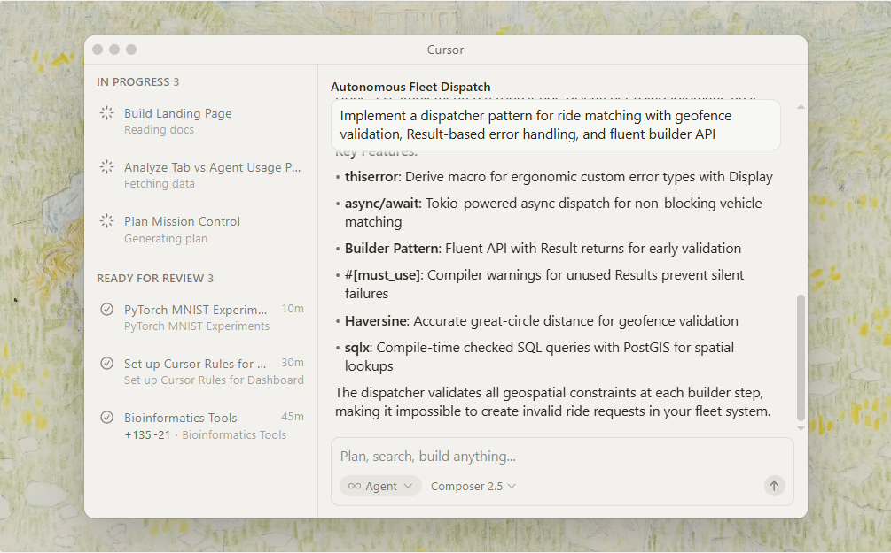
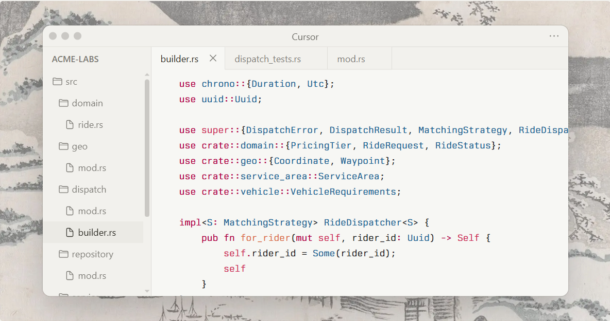
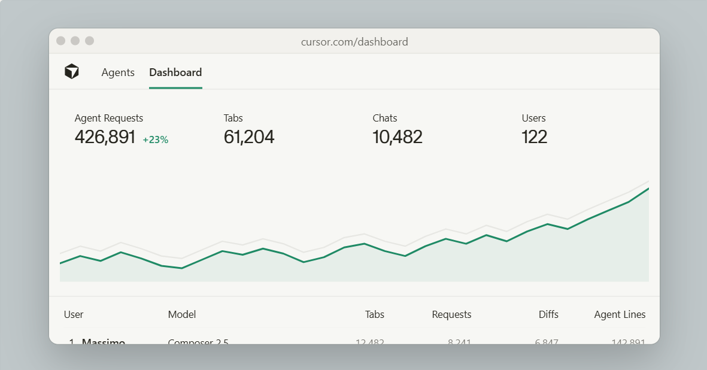
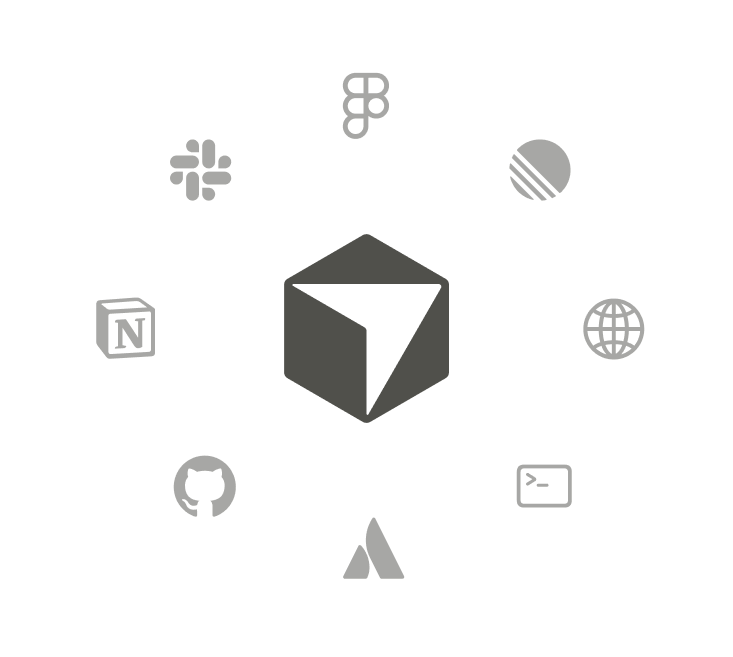

Faire doubles PR throughput with Cursor Cloud Agents
May 26, 2026
Developing enduring software at scale
The choice for ambitious engineering teams
.svg)
.svg)
.svg)
.svg)
.svg)
.svg)
.svg)
.svg)
.svg)
.svg)
.svg)
.svg)
.svg)
.svg)
.svg)
.svg)
Architected for complex codebases built by thousands of developers.
"I would say that it's 0 to 1 in terms of how Cursor has transformed the way our developers use tools to improve quality of the product."
SVP of Engineering, Salesforce


Cursor helps your entire team deliver ambitious products.
"I've never, as a CTO, received so many texts or Slack messages from employees just saying 'Thank you for getting this technology here.'"
CTO, Fox
In head-to-head evaluations, 93% of engineers select Cursor as their preferred AI coding tool.
Cursor has been critical in accelerating our timelines from doing something in four sprints to getting it done in one.
Head of Developer Platforms, Paypal

Fortune 500 companies using Cursor.
Enterprises choose to build with Cursor.
Lines of enterprise code written per day with Cursor.
Globally configure model access, MCP controls, and system-level agent rules.
View enterprise controls ↗
Choose between frontier models from OpenAI, Anthropic, Gemini, and xAI.
View available models ↗When enabled, Bugbot automatically runs in the background on new PRs.
Learn more about Bugbot ↗Built with security and compliance at the core.
Deploy AI at scale with professional expertise.
Tailored support for teams with specialized needs.
No training on your data by Cursor or LLM providers.
SAML based SSO integration for secure user access.
Easily create, update, and remove users and groups.
Configure model access, MCPs, and agent rules.
Compliant with the requirements of GDPR and CCPA.
SOC 2 Type 2 certified and annual penetration testing.
AES-256 encryption at rest and TLS 1.2+ in transit.
Cursor quickly grew from hundreds to thousands of extremely enthusiastic Stripe employees. We spend more on R&D and software creation than any other undertaking, and there's significant economic outcomes when making that process more efficient and productive.
My favorite enterprise AI service is Cursor. Every one of our engineers, some 40,000, are now assisted by AI and our productivity has gone up incredibly.
.svg)
By February 2025, every Coinbase engineer had utilized Cursor, which has become the preferred IDE for most of our developers. Single engineers are now refactoring, upgrading, or building new codebases in days instead of months.
.svg)
Cursor has transformed the way our engineering teams write and ship code, with adoption growing from 150 to over 500 engineers (~60% of our org!) in just a few weeks.
.svg)
JetBrains has always seen its mission as bringing the best of the industry to our users. I'm very excited about Cursor becoming a special guest in the family of ACP-compliant agents in JetBrains IDEs. This collaboration looks like a win for Cursor, for JetBrains, and most importantly for developers.
.svg)
Watching a dozen agent branches merge every day has become normal, and that freed-up velocity shows up everywhere from release cadence to bug-backlog burn-down. Cursor isn't a convenience add-on; it's a scale-multiplier for the whole org.
May 26, 2026
.svg)
May 11, 2026
.svg)
Apr 23, 2026
Apr 15, 2026
.svg)
Laptops or desktops can download the client from our website. Admin managers can quickly invite team members, adjust configuration controls, choose model access tiers, and manage billing centrally from the team dashboard panel workspace interface dashboard.
Cursor is architecture-native and optimized for reading, indexing, and navigating codebases with millions of lines of code across thousands of files. Our specialized background indexers ensure context windows stay up to date with zero lag, rendering intelligent autocomplete choices, syntax alerts, and structured architectural solutions on demand.
With Privacy Mode turned on by default, your code is never used for training models by us or our underlying model providers, ensuring absolute workspace isolation.
Cursor is SOC 2 Type II compliant and undergoes regular third-party external penetration testing. Reports are available via our security trust portal link.
Yes, enterprise workspaces can connect standard identity assertion managers via SAML SSO and automate active user seats cleanly using custom SCIM directory links.
Our sales team can talk about custom deployment architectures. We work with clients to coordinate proxies, secure API routing relays, specialized on-prem gateway topologies, data perimeters, and custom setups.
Enterprise accounts can use our default premium frontier AI models, or route requests using custom API keys connected to centralized engineering platforms.
Enterprise administrative access unlocks comprehensive analytics dashboards showing code acceptance rates, usage frequencies, active developer seat monitoring, and raw productivity tracking. Data can be exported into standard external systems via our core API.